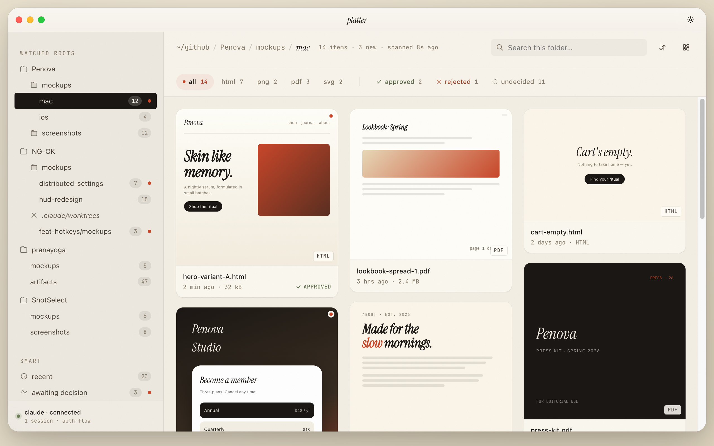

01
Watch the folders
Platter watches ~/github/*/mockups, screenshots, artifacts, worktree mockups — anywhere your agents drop visual artifacts. Add custom roots in Settings.
Agents make mockups, screenshots, PDFs — dozens a day. Platter watches where they land and surfaces them in a Pinterest-style gallery on your Mac. When Claude wants your call, it pauses and asks. Three keystrokes. Or press S to send a link — stakeholders review in their browser, decision syncs back while you sleep.

Platter watches ~/github/*/mockups, screenshots, artifacts, worktree mockups — anywhere your agents drop visual artifacts. Add custom roots in Settings.
Pinterest-style masonry on cream paper. Live HTML thumbnails, image previews, decision marks per file. Recency-sorted across every project. Spacebar to Quicklook.
The MCP server lets Claude call present_mockups() mid-session. The call blocks. A modal pops on your Mac. A approve, R reject, 1–9 pick. Decision flows back. Done.
Press S in any preview to generate a public link. Stakeholders open it in their browser, see the asset at full fidelity, and approve or reject. The verdict syncs back automatically.
From download to your first agent-driven review in under five minutes.
Grab the .dmg from GitHub Releases, drag platter.app to Applications, launch. The gallery opens immediately.
Open Settings → Watch roots ⌘,. The default ~/github/*/mockups is already active. Add any folder where agents drop files.
Run once — wires platter into every Claude Code session.
claude mcp add platter -- /Applications/platter.app/Contents/MacOS/platter --mcp-stdio
Agent calls present_mockups(). Platter comes forward. Press A to approve, R to reject. Work resumes instantly.
Anywhere a human call sits between an agent action and the next step — that's where platter fits.
Claude generates 3–5 variants. You pick the winner in Pick One mode. Iteration time drops from days to minutes.
Agents draft proposals and spec PDFs. Approved ones go out; rejected ones loop back with your note.
Before/after screenshots surface side-by-side. You approve before the PR merges.
Press S in any preview to create a public link. Client decides in their browser; verdict syncs back while you sleep.
Revise mode sends your note back to the agent mid-session. It adjusts and re-presents — all inside one Claude Code run.
Icons, banners, social images — platter is the last gate. Approved batch gets committed; rejected files never land in the repo.
Once registered as an MCP server, platter is callable from any Claude Code session. The agent decides when to ask; you decide what passes.
Asset review is a moment of judgment. A critic at a print room. An editor on a contact sheet. Platter borrows from that world: cream paper, ink, hairlines, italic display moments — and a single confident accent in vermilion, the color of Italian print-shop ink and the imperial seal.
The MCP review modal isn't a system dialog. It's a dimmed stage with the asset framed and the prompt rendered in italic Hoefler Text. The lights dim. You decide. The lights come back up.
Read the design notes →#F4EFE5#1B1714#C9472A#6E7F58#A04428#B58A3D